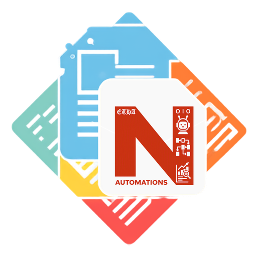
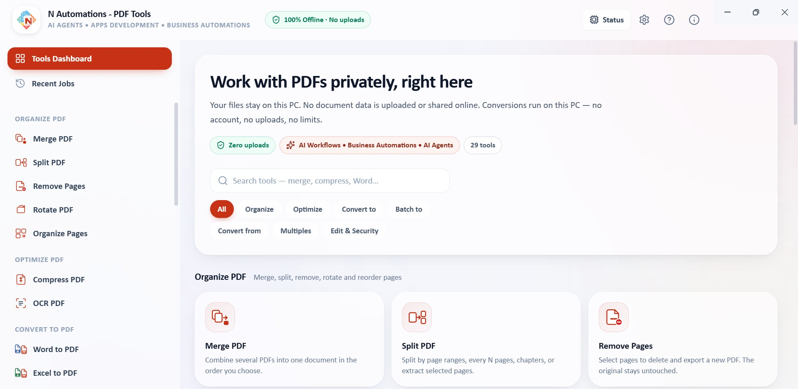
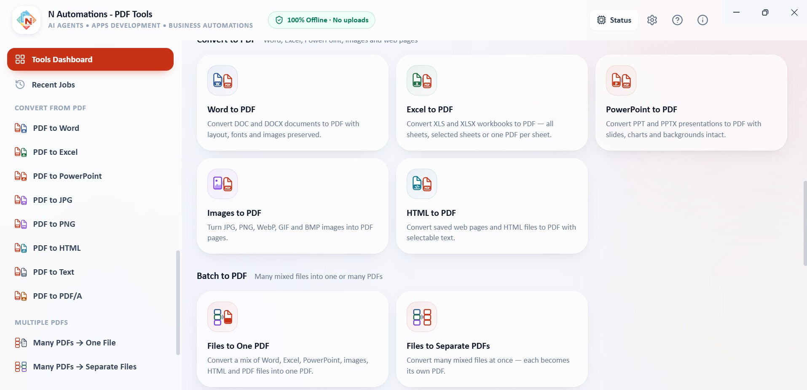
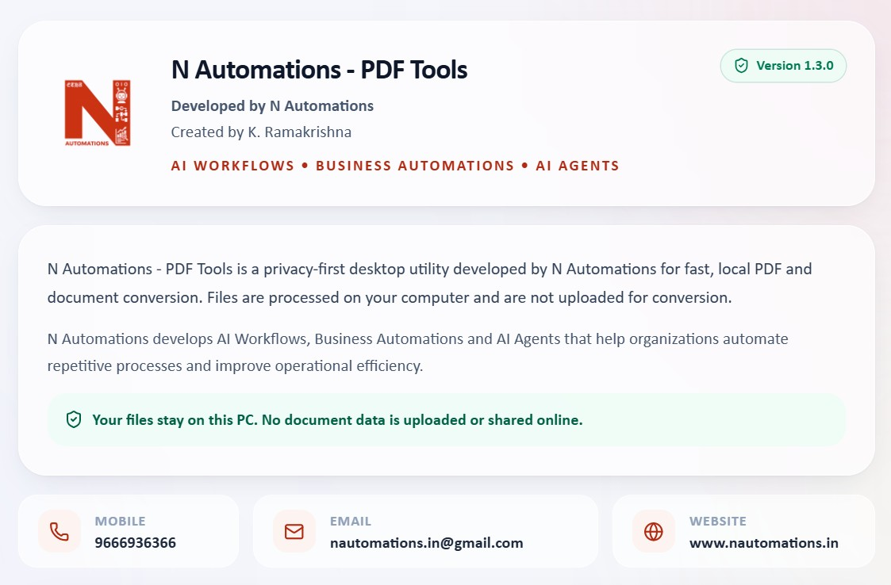

A complete offline PDF toolkit for Windows. 29 tools to organise, optimise and convert documents — every conversion runs on your PC, with no account, no uploads and no internet needed.

Select a screenshot to open it full size.



Free. Choose how you want to install it.
Need help? support@nautomations.in
Microsoft, Windows and Microsoft Store are trademarks of the Microsoft group of companies. Other product names are the property of their owners.